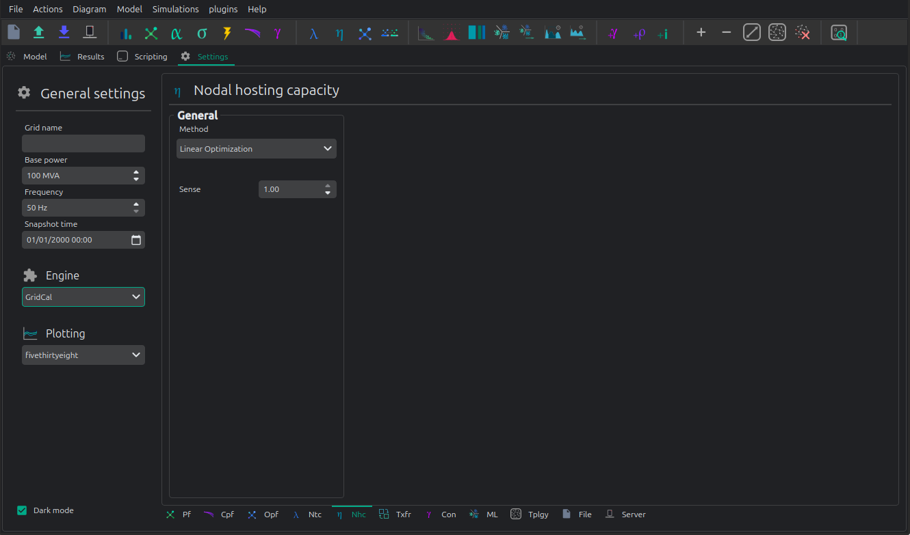

🏭 Nodal hosting capacity
The hosting capacity on VeraGrid is just a modification that lives in the respective linear and non-linear optimal power flow routines.


Registered Result Properties
NodalCapacityTimeSeriesResults registered properties
The nodal hosting capacity result stores the optimized capacity at the selected capacity buses.
Property |
Type |
Description |
|---|---|---|
|
|
Bus indices where nodal hosting capacity was optimized. |
|
|
Optimized nodal hosting capacity at the selected buses. |
API
Linear hosting capacity
Using the API shortcut it is very easy to specify a nodal hosting optimization.
The key parameters are:
optimize_nodal_capacity: Optimize for hosting capacity?
nodal_capacity_sign: Sense of the optimization (>0 for generation hosting, <0 for load hosting)
capacity_nodes_idx: array of bus indices to optimize.
import os
import numpy as np
import VeraGridEngine as gce
fname = os.path.join('data', 'grids', 'IEEE 14 zip costs.veragrid')
grid = gce.FileOpen(fname).open()
# Linear OPF
res, model = gce.run_linear_opf_ts(
grid=grid,
dispatch_mode=gce.OpfDispatchMode.NodalCapacity,
time_indices=None,
nodal_capacity_sign=-1.0,
capacity_nodes_idx=np.array([10, 11])
)
print('P linear nodal capacity: ', res.nodal_capacity_vars.P)
P linear nodal hosting capacity: [4.85736901, 1.52653874] p.u.
Non-linear example for IEEE-14.
Observe that we are using the more complex objects formation of the code instead of the API shortcut. Here, the key parameters are passed onto the `OptimalPowerFlowOptions object.
import os
import numpy as np
import VeraGridEngine as vg
fname = os.path.join('data', 'grids', 'IEEE 14 zip costs.veragrid')
grid = vg.FileOpen(fname).open()
# Nonlinear OPF
pf_options = vg.PowerFlowOptions(solver_type=vg.SolverType.NR)
# declare the optimal power flow options
opf_options = vg.OptimalPowerFlowOptions(
solver=vg.SolverType.NONLINEAR_OPF,
ips_tolerance=1e-8,
ips_iterations=50,
verbose=0,
acopf_mode=vg.AcOpfMode.ACOPFstd
)
# Run a non-linear ACOPF to get the hosting capacity
res = vg.run_nonlinear_opf(
grid=grid,
opf_options=opf_options,
plot_error=False,
optimize_nodal_capacity=True,
nodal_capacity_sign=-1.0,
capacity_nodes_idx=np.array([10, 11])
)
print('P non-linear nodal capacity: ', res.nodal_capacity)
P non-linear nodal hosting capacity: [5.0114640, 1.693406] p.u.